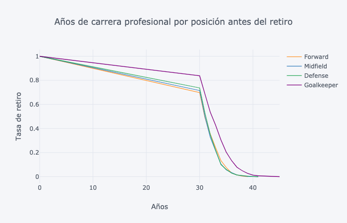
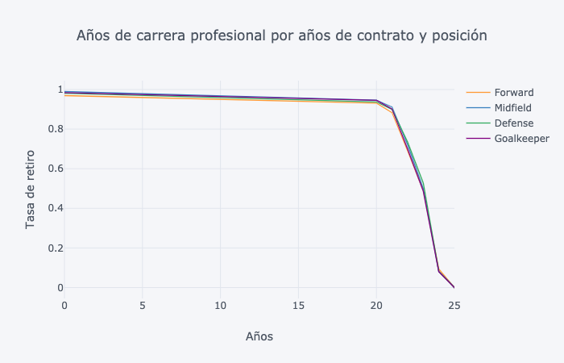
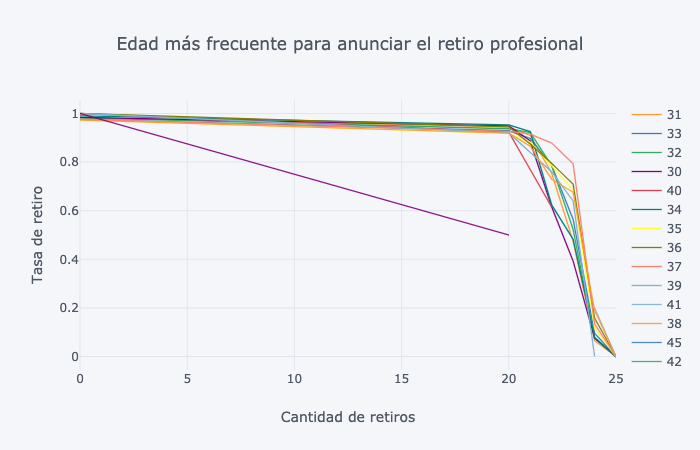
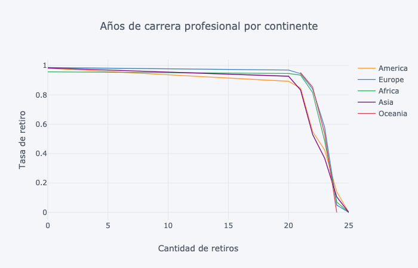
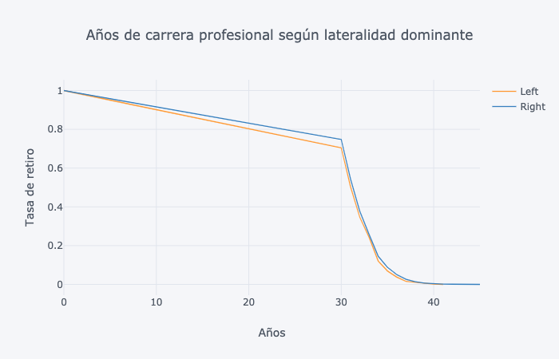

El análisis de supervivencia tiene una característica que lo diferencia de otros análisis estadísticos, y es que ciertos individuos experimentan un evento terminal (suceso) y otros no. En este sentido, el tiempo de supervivencia de los que no lo han experimentado se convierte en un factor desconocido. En el presente trabajo, el "evento" analizado consiste en la fecha de retiro de los jugadores profesionales.
En particular, la base de datos se segmentó en 2 partes; la primera, contiene a todos los jugadores de 16 hasta 29 años de edad, los cuales supondremos que no tendrían por qué experimentar (en el corto plazo) el retiro; en segundo lugar, se consideró a los jugadores de 30 hasta 43, los cuales sí estarán más propensos a experimentar dicho evento.
La supervivencia es una medida de tiempo a una respuesta, fallo, muerte, recaída o desarrollo de un determinad evento. El término supervivencia se debe a que en las primeras aplicaciones de este método de análisis se utilizaba como evento la muerte de un paciente.
En la primera gráfica, es posible observar que los delanteros ['Forwards'] son los jugadores que más pronto se retiran, mientras que los porteros ['Goalkeepers'] tienen una carrera profesional más longeva. Esto tiene correspondencia con lo que sucede en realidad. Los porteros cuentan con un menor desgaste físico que cualquier otra posición; por otra parte, los delanteros están mucho más expuestos a recibir faltas que les condiciones su carrera profesional.

Esta idea se ve reforzada con el hecho de que los porteros tienen una carrera profesional de casi 24 años que juegan de manera ininterrumpida al fútbol. En tanto, delanteros, medios y defensas tienen una carrera activa de 20 años y, en ciertos casos, los jugadores que se mantienen vigentes emigran a ligas menos competitivas o con una mayor retribución económica para finalizar sus carreras.

La edad donde más anuncios de retiros se presentan entre los 34 años y 35 años de edad.

Mlkshk flexitarian ethical, narwhal forage bespoke artisan hella plaid vinyl try-hard Tonx actually keytar. McSweeney's chambray forage next level, mixtape Austin Portland Odd Future ethical seitan. Gluten-free roof party locavore, pop-up cornhole chambray mlkshk bitters McSweeney's Kickstarter bespoke. YOLO cred pop-up chambray PBR&B. Kitsch mixtape DIY skateboard leggings, YOLO ennui chillwave dreamcatcher put a bird on it. Pug artisan PBR&B PBR dreamcatcher, Marfa Etsy mixtape mustache messenger bag Vice. Plaid lomo pour-over post-ironic, synth disrupt beard Truffaut church-key Tumblr narwhal Bushwick cred slow-carb tofu.
Pitchfork disrupt Vice fixie sriracha Blue Bottle. Carles gastropub skateboard Schlitz, Truffaut semiotics PBR fanny pack. Truffaut biodiesel aesthetic, skateboard Etsy distillery blog. Craft beer mumblecore bitters, Tonx fixie viral fingerstache Bushwick occupy. DIY tofu pug lo-fi, street art flexitarian Truffaut. 90's banjo lo-fi master cleanse selvage Tonx, narwhal tote bag. Helvetica before they sold out put a bird on it slow-carb normcore lo-fi.

Mlkshk flexitarian ethical, narwhal forage bespoke artisan hella plaid vinyl try-hard Tonx actually keytar. McSweeney's chambray forage next level, mixtape Austin Portland Odd Future ethical seitan. Gluten-free roof party locavore, pop-up cornhole chambray mlkshk bitters McSweeney's Kickstarter bespoke. YOLO cred pop-up chambray PBR&B. Kitsch mixtape DIY skateboard leggings, YOLO ennui chillwave dreamcatcher put a bird on it. Pug artisan PBR&B PBR dreamcatcher, Marfa Etsy mixtape mustache messenger bag Vice. Plaid lomo pour-over post-ironic, synth disrupt beard Truffaut church-key Tumblr narwhal Bushwick cred slow-carb tofu.
Pitchfork disrupt Vice fixie sriracha Blue Bottle. Carles gastropub skateboard Schlitz, Truffaut semiotics PBR fanny pack. Truffaut biodiesel aesthetic, skateboard Etsy distillery blog. Craft beer mumblecore bitters, Tonx fixie viral fingerstache Bushwick occupy. DIY tofu pug lo-fi, street art flexitarian Truffaut. 90's banjo lo-fi master cleanse selvage Tonx, narwhal tote bag. Helvetica before they sold out put a bird on it slow-carb normcore lo-fi.

Wolf vinyl hella, jean shorts disrupt skateboard master cleanse hashtag iPhone. Pop-up bicycle rights Brooklyn iPhone Helvetica kitsch Godard, XOXO blog aesthetic beard quinoa. Fixie kale chips PBR&B twee, YOLO raw denim before they sold out photo booth bespoke seitan food truck. Ethical chia before they sold out, trust fund viral ennui you probably haven't heard of them cred bitters mixtape semiotics deep v jean shorts pork belly occupy shabby chic sriracha ethnic normcore bicycle rights single-origin coffee slow-carb jean shorts. Twee ethnic mumblecore, Carles banh mi slow-carb pour-over organic. Ethical tofu narwhal, hoodie viral ennui tousled paleo. Butcher chia cray iPhone keytar, sustainable Cosby sweater literally try-hard put a bird on it photo booth ethical street art literally semiotics.